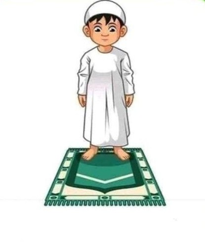
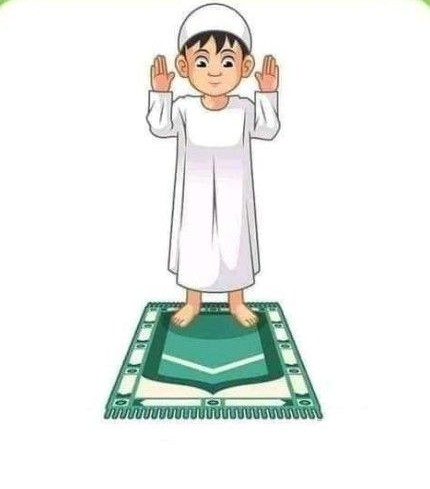
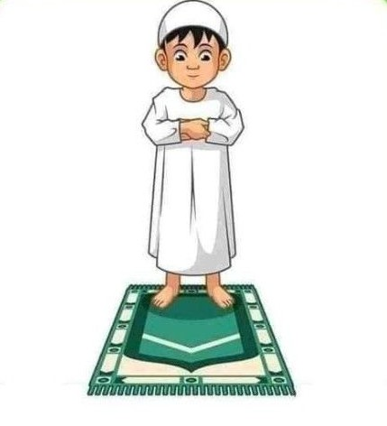
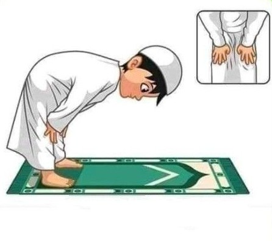
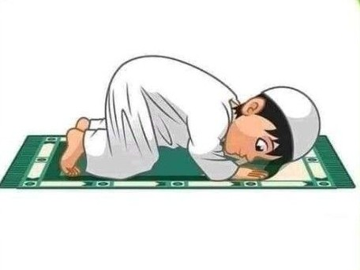

Tata Cara Sholat Lengkap
Membaca Niat Sholat
Takbiratul Ihram
Membaca Doa Iftitah, Al-Fatihah, dan Surah Pendek
Bacaan Iftitah
اَللّهُمَّ باَعِدْ بَيْنِى وَبَيْنَ خَطَاياَيَ كَمَا باَعَدْتَ بَيْنَ الْمَشْرِقِ وَالْمَغْرِبِاَللّهُمَّ نَقِّنِى مِنَ الْخَطَاياَ كَماَ يُنَقَّى الثَّوْبُ اْلأَبْيَضُ مِنَ الدَّنَسِاَللّهُمَّ اغْسِلْ خَطَاياَيَ باِلْماَءِ وَالثَّلْجِ وَالْبَرَدِ.
Allaahumma baa’id bainii wabainaa khotoo yaa ya kamaa baa ‘adta bainal masyriqi wal maghrib. Allaahumma naqqinii minal khotoo yaa kamaa yunqqots tsaubul abyadhuu minaddanas. Allaahummaghsil khotoo yaa ya bil maa i wats tsalji walbarod.
Artinya : “Ya Allah, jauhkanlah antara diriku dan di antara kesalahan-kesalahanku sebagaimana Engkau jauhkan antara timur dan barat. Ya Allah, bersihkanlah aku dari kesalahan sebagaimana dibersihkannya kain putih dari kotoran. Ya Allah, cucilah kesalahan-kesalahanku dengan air, salju dan embun.”Bacaan Al-fatihah
بِسْمِ اللّٰهِ الرَّحْمٰنِ الرَّحِيْمِ اَلْحَمْدُ لِلّٰهِ رَبِّ الْعٰلَمِيْنَۙ الرَّحْمٰنِ الرَّحِيْمِۙ مٰلِكِ يَوْمِ الدِّيْنِۗ اِيَّاكَ نَعْبُدُ وَاِيَّاكَ نَسْتَعِيْنُۗ اِهْدِنَا الصِّرَاطَ الْمُسْتَقِيْمَۙ صِرَاطَ الَّذِيْنَ اَنْعَمْتَ عَلَيْهِمْ ەۙ غَيْرِ الْمَغْضُوْبِ عَلَيْهِمْ وَلَا الضَّاۤلِّيْنَࣖ
bismillâhir-raḫmânir-raḫîm al-ḫamdu lillâhi rabbil-‘âlamîn ar-raḫmânir-raḫîm mâliki yaumid-dîn iyyâka na‘budu wa iyyâka nasta‘în ihdinash-shirâthal-mustaqîm shirâthalladzîna an‘amta ‘alaihim ghairil-maghdlûbi ‘alaihim wa ladl-dlâllîn
Artinya: Dengan nama Allah Yang Maha Pengasih lagi Maha Penyayang. Segala puji bagi Allah, Tuhan semesta alam Yang Maha Pengasih lagi Maha Penyayang, Pemilik hari Pembalasan. Hanya kepada Engkaulah kami menyembah dan hanya kepada Engkaulah kami memohon pertolongan. Bimbinglah kami ke jalan yang lurus, (yaitu) jalan orang-orang yang telah Engkau beri nikmat, bukan (jalan) mereka yang dimurkai dan bukan (pula jalan) orang-orang yang sesat.Bacaan surah: Surat Al-Ikhlas
قُلْ هُوَ اللّٰهُ اَحَدٌۚ اَللّٰهُ الصَّمَدُۚ لَمْ يَلِدْ وَلَمْ يُوْلَدْۙ وَلَمْ يَكُنْ لَّهٗ كُفُوًا اَحَدٌ ࣖ
Qul huwallāhu aḥad(un). Allāhuṣ-ṣamad(u). Lam yalid wa lam yūlad. Wa lam yakul lahū kufuwan aḥad(un).
Artinya: Katakanlah (Nabi Muhammad), “Dialah Allah Yang Maha Esa. Allah tempat meminta segala sesuatu. Dia tidak beranak dan tidak pula diperanakkan serta tidak ada sesuatu pun yang setara dengan-Nya.”Takbir
Rukuk
سُبْحَانَكَ اللّهُمَّ رَبَّناَ وَبِحَمْدِكَ اَللّهُمَّ اغْفِرْلِى
Subhaanaka allaahuma robbanaa wabihamdika allaahumaghfirlii.
Artinya: Maha suci Engkau, ya Allah, dan dengan memuji kepada Engkau, ya Allah, aku memohon ampun.Takbir
I'tidal
سَمِعَ اللهُ لِمَنْ حَمِدَهُ رَبَّناَ وَلَكَ الْحَمْدُ حَمْدًا كَثِيْرًا طَيِّبًا مُبَارَكًافِيْهِ
Sami'allaahu liman hamidah. Rabbanaa wa lakal hamdu hamdan katsiran thayyiban mubaarokan fiihi.
Artinya: "Allah mendengar orang yang memujinya. Ya Tuhanku, bagimulah segala puji-pujian yang banyak, baik dan memberkati."Sujud
سُبْحَانَكَ اللهُمَّ رَبَّنَا وَبِحَمْدِكَ اللهُمَّ اغْفِرْلِيْ
Subhaanakallah humma rabbanaa wa bihamdikallahummaghfirlii.
Artinya: "Mahasuci Engkau, Ya Allah, dan dengan memuji kepada Engkau, Ya Allah, aku memohon ampun."Duduk Diantara Dua Sujud

Sujud
Duduk Tahiyat Awal

Takbir
Bersedekap
Takbir
Rukuk
Takbir
I'tidal
Sujud
Duduk Diantara Dua Sujud
Sujud
Duduk Tahiyat Akhir

Mengucap Salam

Mengucap Salam